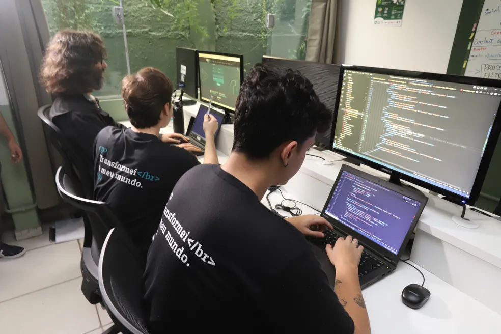
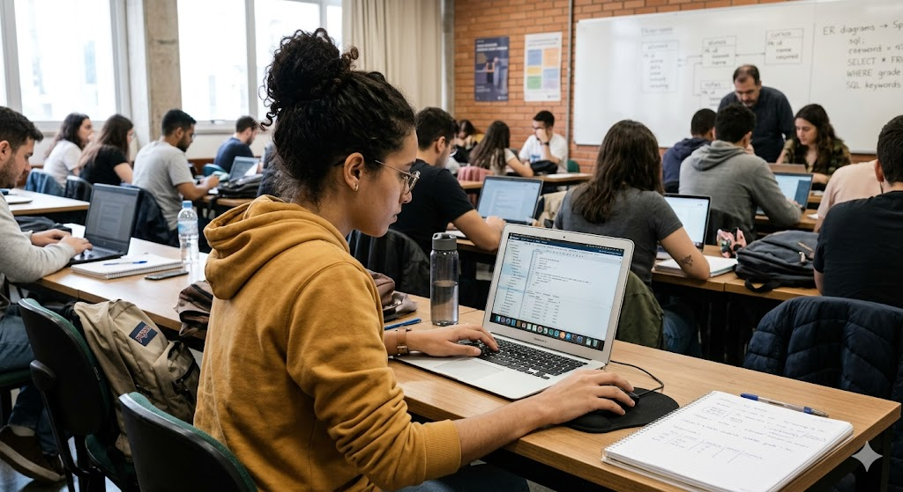
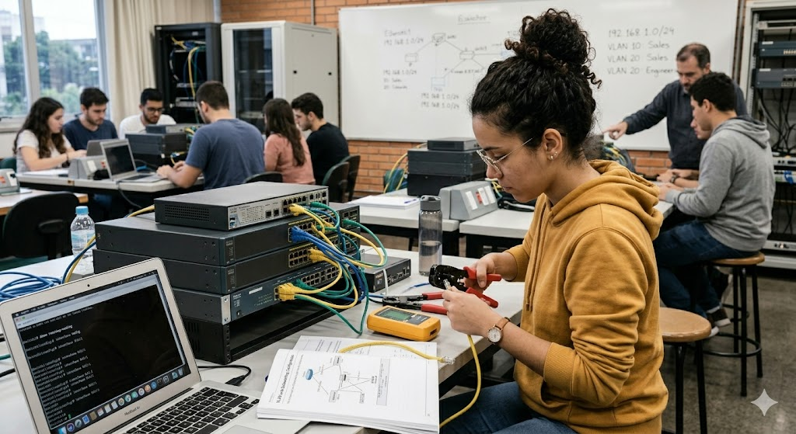
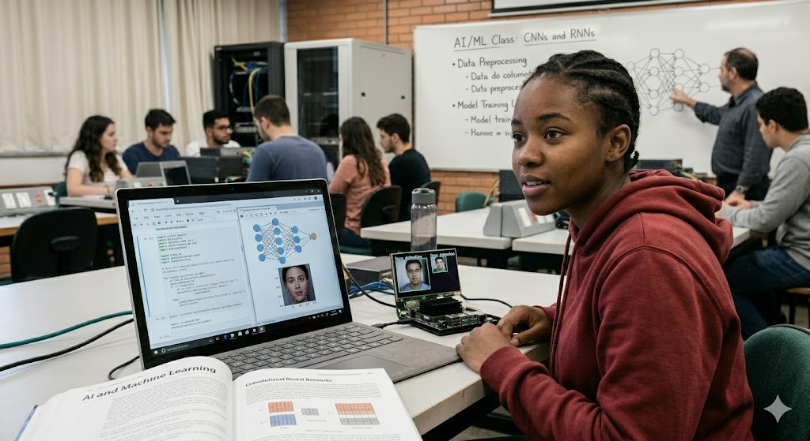
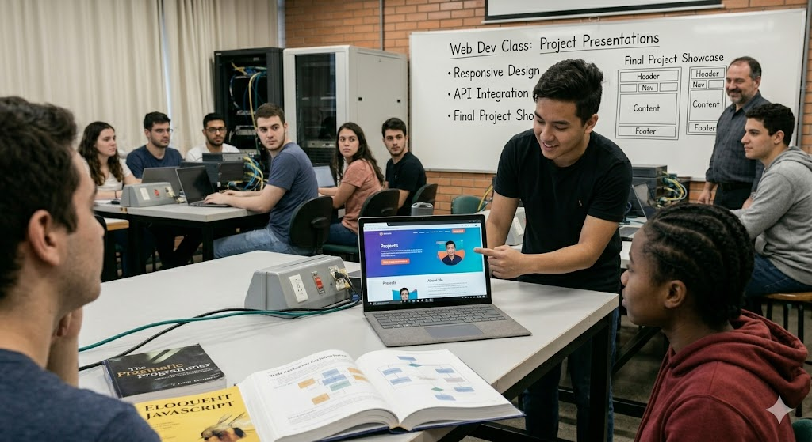
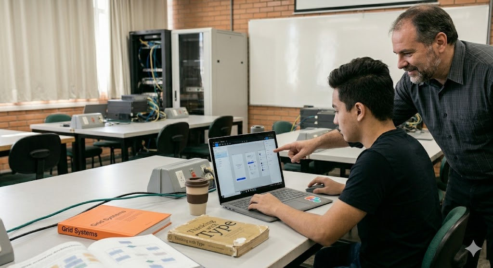
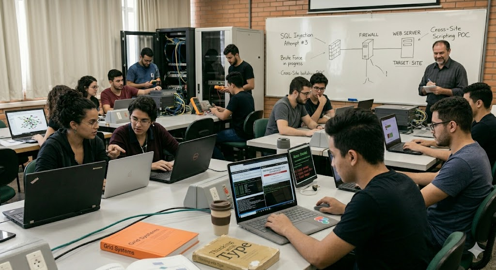

Curso Ciência da Computação
O curso de Ciência da Computação forma profissionais preparados para criar soluções tecnológicas,
desenvolver sistemas, atuar com inteligência artificial, segurança digital e inovação,
contribuindo diretamente para a transformação da sociedade através da tecnologia.
O que estudamos
Durante o curso, desenvolvemos conhecimentos teóricos e práticos voltados para tecnologia,
programação e inovação, preparando os alunos para o mercado de trabalho e para projetos reais.
Programação
Desenvolvimento de algoritmos, lógica de programação e criação de sistemas utilizando diferentes
linguagens e tecnologias.
- Lógica de programação
- Estruturas condicionais e de repetição
- Criação de algoritmos
- Desenvolvimento de aplicações

Banco de Dados
Aprendizado sobre armazenamento, organização e gerenciamento de informações em sistemas
computacionais.
- Modelagem de dados
- SQL e consultas
- Relacionamento entre tabelas
- Gerenciamento de bancos de dados

Redes de Computadores
Estudo da comunicação entre dispositivos, internet, protocolos de rede e infraestrutura
computacional.
- Configuração de redes
- Protocolos de comunicação
- Segurança básica de redes
- Infraestrutura de internet

Inteligência Artificial
Desenvolvimento de soluções inteligentes capazes de automatizar processos e analisar dados.
- Machine Learning básico
- Análise de dados
- Automação de tarefas
- Uso de ferramentas de IA

Desenvolvimento Web
Criação de sites, sistemas web e aplicações modernas utilizando HTML, CSS, JavaScript e outras
tecnologias.
- Criação de interfaces modernas
- Sites responsivos
- Interatividade com JavaScript
- Desenvolvimento Front-end

Design Digital
Desenvolvimento de habilidades criativas para criação de interfaces, identidade visual e
experiências digitais modernas.
- UI/UX Design
- Criação de protótipos
- Edição de imagens
- Design para web

Segurança Computacional
Estudo das práticas de proteção de dados, sistemas e usuários no ambiente digital.
- Proteção de dados
- Boas práticas de segurança
- Criptografia básica
- Segurança em sistemas
